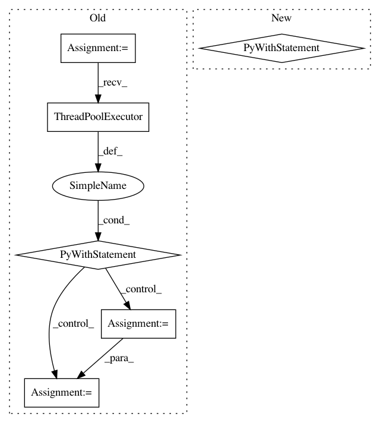

cef99445ab551931fed507518b85034b97c946ee,src/search_suspect_places.py,,search_suspicious_around_companies,#Any#,130
Before Change
:param companies: pandas dataframe.
with futures.ThreadPoolExecutor(max_workers=40) as executor:
future_to_search_suspicious = dict()
for index, company in companies.iterrows():
future = executor.submit(search_suspicious_around_company, company)
future_to_search_suspicious[future] = company
for future in futures.as_completed(future_to_search_suspects):
company = future_to_search_suspicious[future]
if future.exception() is not None:
warn("{} raised an exception: {}".format(company["cnpj"],
future.exception()))
elif future.result() is not None:
write_suspicious_info(future.result(), company["cnpj"])
def search_suspicious_around_company(company):
:param company: panda series.
:return: suspect
After Change
rows = companies.to_dict("records")
total = len(rows)
count = 0
with Pool(processes=4) as pool:
for company in pool.imap(search_suspicious_around_company, rows):
count += 1
print_status(total, count)
if company:
write_csv(company)
def search_suspicious_around_company(company):
:param company: (dict)
:return: suspect
In pattern: SUPERPATTERN
Frequency: 3
Non-data size: 6
Instances
Project Name: okfn-brasil/serenata-de-amor
Commit Name: cef99445ab551931fed507518b85034b97c946ee
Time: 2016-11-09
Author: cuducos@gmail.com
File Name: src/search_suspect_places.py
Class Name:
Method Name: search_suspicious_around_companies
Project Name: tensorflow/magenta
Commit Name: a8239b85ac15938b1e8b86dee4c909a76c178a59
Time: 2017-10-13
Author: Minima2014@iCloud.com
File Name: magenta/scripts/convert_dir_to_note_sequences.py
Class Name:
Method Name: convert_directory
Project Name: tensorflow/datasets
Commit Name: bba40377c35d9329703401e06d946ac047e1a4a1
Time: 2020-11-06
Author: epot@google.com
File Name: tensorflow_datasets/scripts/documentation/document_datasets.py
Class Name:
Method Name: document_single_builder